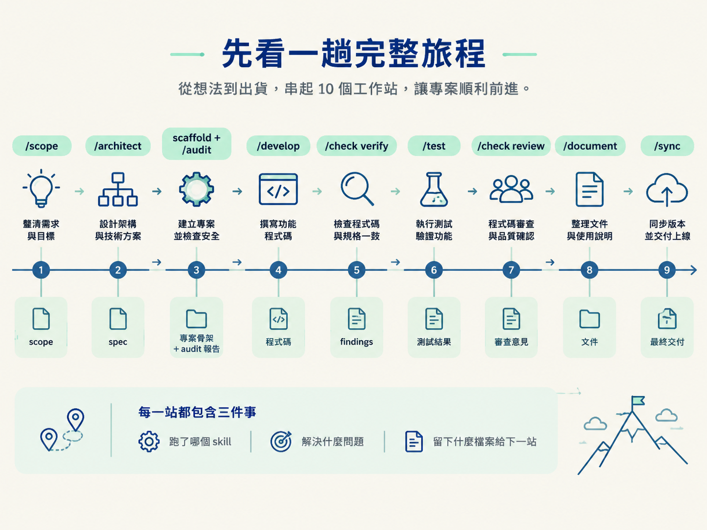
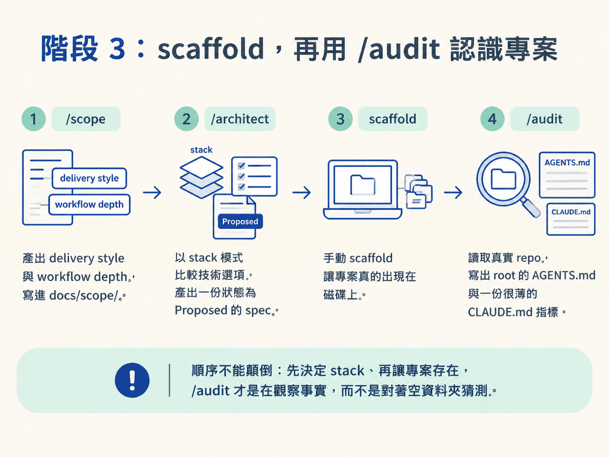
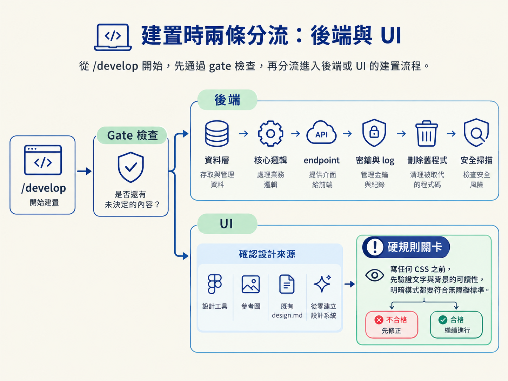
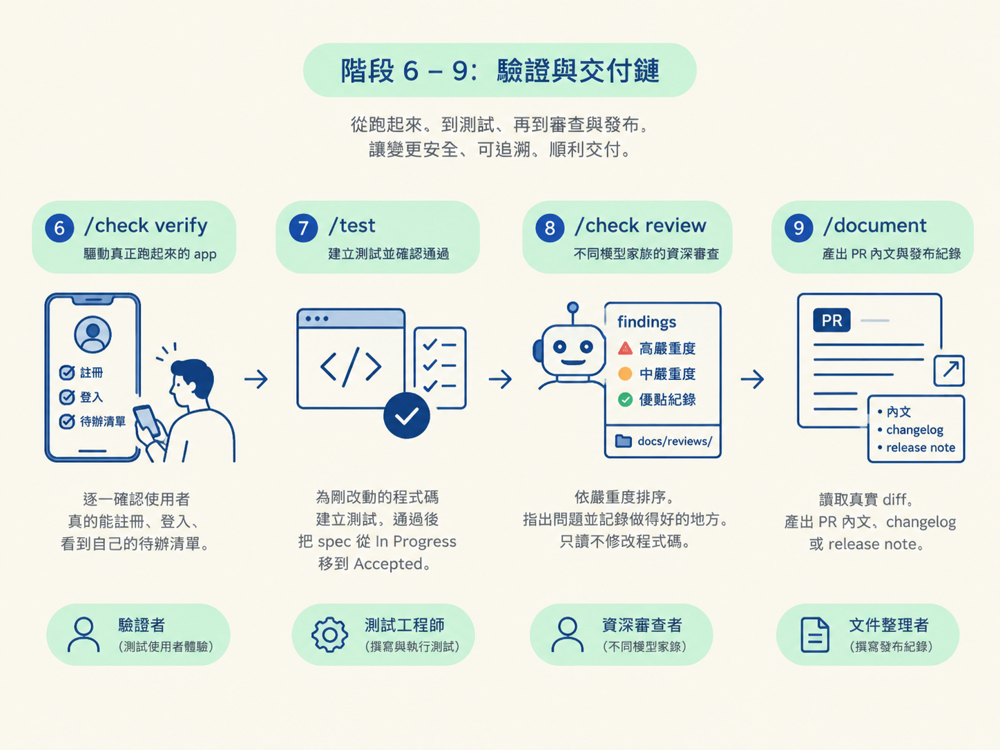
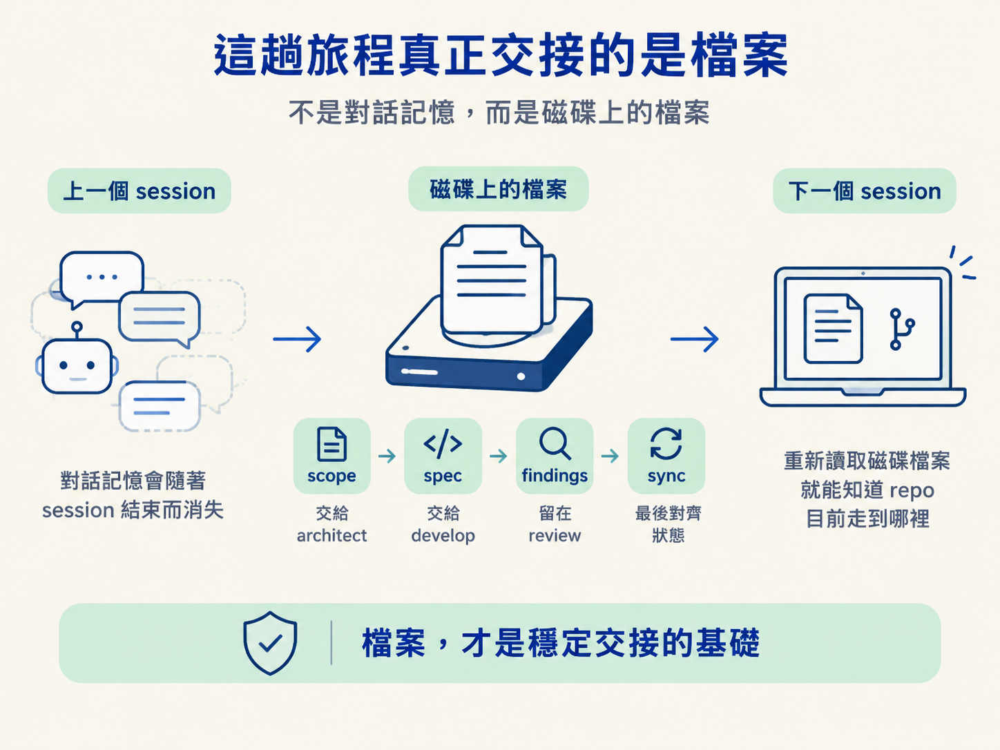

你可能已經看過九個工作站、主線與四個入口，也知道四種檢查深度各自負責什麼。但規則分開看，還是像只看過捷運圖，知道有轉乘站，卻不知道實際走起來會在哪裡換車。
這一節用一個全新的「登入＋個人待辦清單」app，把整條路跑一次：從想法、選技術棧、建立專案，到功能出貨與檔案對齊。每一站都看三件事：跑了哪個 skill、它解決哪個問題，以及留下什麼能交給下一站的檔案。

先把整趟旅程攤開。後面再依階段拆解細節。
| 階段 | 你跑什麼 | 它在做什麼／留下什麼 |
|---|---|---|
| 1 | /scope | 把想法變成計畫，選 delivery style 與 depth；寫進 docs/scope/ |
| 2 | /architect（stack 模式） | 決定技術棧；寫出一份 Proposed 的 spec |
| 3 | 手動 scaffold ＋ /audit | 長出空專案；寫出 root AGENTS.md 與 CLAUDE.md 指標 |
| 4 | /architect（feature 模式） | 設計登入功能；寫出第二份 Proposed spec 並連結到 scope |
| 5 | /develop | 過 gate、分流、蓋後端與 UI；動 spec 狀態、更新 scope、寫 verify 步驟 |
| 6 | /check verify | 驅動真的跑起來的 app，證明功能照 spec 運作 |
| 7 | /test | 為剛改動的程式碼寫測試；spec 轉為 Accepted |
| 8 | /check review | 換一個模型家族做資深審查；findings 寫進 docs/reviews/ |
| 9 | /document | 從真 diff 寫 PR 內文、changelog 等給人看的文字 |
| 10 | /sync | 把 AGENTS.md、scope、spec 狀態對回程式碼真實的樣子 |
/scope 把想法變成計畫因為 repo 還是空的，/scope 會把這次工作視為全新專案，先規劃地基與第一個可交付的功能。這一站先不談要寫哪些檔案，真正要回答的是「你想用什麼方式交付成果」。
選定的 delivery style 會成為專案預設值，之後單一功能仍可以覆寫它。接著，/scope 會請你選 workflow depth。這個待辦 app 選的是 Beta：完成 develop 後，還要跑 /check verify 和 /test。
因此，階段 1 的真正產出是兩個決定：delivery style 與 depth。它們連同整份計畫一起寫進 docs/scope/，成為後續工作的入口。
/architect 決定技術棧此時 repo 還沒有 stack，所以第一次執行 /architect 會進入 stack 模式。它會先讀現有的 context 檔，再大致比較幾個技術選項，提出明確建議。
它把問題分成三類：
如果某個決策可能需要外部連接器或現成 skill，它也會先詢問你是否同意搜尋；沒有你的允許，不會自行連網。
對話結束後，技術棧決策會寫成 docs/specs/ 裡的一份 spec，狀態是 Proposed。這表示「決定已經形成，但尚未建置」。從這一刻開始，spec 就是建置時要遵守的合約。
/audit 認識專案你先使用 stack 自己的工具建立空專案，讓磁碟上真的有程式碼。接著才執行 /audit。
/audit 讀的是剛 scaffold 完的真實 repo，因此能寫出 root 層的 AGENTS.md，並建立一份很薄的 CLAUDE.md 指標檔。裡面會記錄 stack、執行指令與它觀察到的專案慣例。
順序不能顛倒：先決定 stack、再讓專案存在，/audit 才是在觀察事實，而不是對著空資料夾猜測。

第二次執行 /architect 時，目標從整個 stack 縮小成單一功能：登入。
它仍然沿用同一套問題分流：能推導的自行推導，只有你知道的才詢問，專業判斷則提出建議。開始寫之前，它也會先檢查是否已有相近的 spec。若找到相似內容，會請你選擇要建立新決策、更新舊 spec，或取代舊 spec。
接著它依決策規模決定 spec 的形狀：單純決策使用一個檔案，較大或包含多個部分的決策則使用一個小資料夾。登入功能會寫成 Proposed spec，並連回 scope 中對應的項目，讓「計畫」與「具體決策」彼此找得到。
/develop 的 gate 先攔住未知決策/develop 不是收到指令就立刻寫程式。它先檢查一件事：要建置這個功能，還有哪個決定沒做？這就是 gate。
登入已有 spec，所以可以通過 gate 開始建置。若決策缺席，/develop 會停下來，提供三條路：
/architect，正式做出決策；這是建議路徑。Assumed 的小 spec。第三條路的重點，是把「暫時這樣想」變成 repo 裡看得見的檔案，而不是只留在對話中。/develop 會把這個功能標記為欠 ratification，直到你回到 /architect 正式審議；不過這個旗標不會阻止你把功能標成 done。
通過 gate 後，/develop 判斷工作屬於 UI、後端，或兩者都有。登入同時包含註冊與登入畫面，以及背後的 session 邏輯，因此兩條路都會執行。
後端依固定順序建置：
如果建置中發現 spec 本身有問題，例如資料形狀根本無法容納需求，流程會停下來，把你送回 /architect 修正決策，而不是默默做出另一種實作。
UI 先確認設計來源：
design.md 與 CSS，就沿用既有系統。若需要新建設計系統，會依序詢問參考方向與想要的氛圍，再定出主色、一階灰、字級、間距、圓角與動態。
這裡有一道硬規則：寫任何 CSS 之前，先檢查文字與背景的可讀性是否符合無障礙標準，明暗模式都要驗證。不合格，就先修正，不能把問題留到出貨後。

功能落地後，/develop 會把 spec 從 Proposed 推進到 In Progress，勾選 scope 中確實完成的部分，並更新 scope。
它不會在這裡把功能整體標成完成，因為還沒有驗證與測試。最後，它依 acceptance criteria 寫出具體的手工驗證步驟，並詢問你要把內容存成 spec 旁的 verify.md，還是只顯示給你看。
/check verify 驗證真的運作/check verify 驅動真正跑起來的 app，逐一確認 spec 承諾的行為與畫面，而不是只看某個測試檔是否通過。
對這個 app 來說，驗證的結果要能回答：使用者真的能註冊、登入，也看得到自己的待辦清單。
/test 把行為鎖住接著執行 /test，為剛才改動的程式碼建立真正的測試。它會先確認專案用哪個測試框架；第一次問過之後，它就會記住。
測試涵蓋正常路徑、邊界情況、錯誤狀態與介面可及性。當驗證通過、測試也到位，功能才可以標成 done，spec 也從 In Progress 移到 Accepted。
/check review 取得不同模型的審查/check review 會用不同於寫程式時的模型家族進行資深審查。原因很簡單：同一個模型很容易對自己的作品產生盲點。
審查結果會寫進 docs/reviews/，依嚴重度排序，除了指出問題，也會記錄這次改動做得好的地方。這一站只讀程式碼，不修改程式碼。

/document 把 diff 寫成人看得懂的文字/document 讀取真實的 commit 與 diff，再依需求產出 PR 內文、changelog 條目或 release note，放到正確位置。
它只負責溝通，不寫程式，也不寫 spec。
/sync 讓檔案回到真實狀態在 merge 前執行 /sync。它會對照目前的程式碼，更新存放專案知識的 durable 檔案：
/sync 只做小幅、精準的修改：補上它負責的行、修正它擁有的內容，不會整篇重寫你的文字。
走完十站後，功能已經完成驗證、測試、審查與文件化，專案知識也重新對齊。你可以清掉 session，下一個 session 只要重新讀取磁碟，就能知道 repo 目前走到哪裡。
這個 app 走的是 canonical pipeline 的一次具體演出：/scope決定計畫與 depth；/architect先決定 stack，再把登入決策寫成 spec；scaffold 後由/audit認識專案；/develop通過 gate、分流並建置前後端；/check verify用真的 app 證明行為；/test鎖住行為；/check review換模型審查；/document寫給人看的內容；最後由/sync將檔案對回程式碼。每一站的產出，都是下一站的輸入。
這些交接能穩定運作，靠的是磁碟上的檔案：scope 交給 architect，spec 交給 develop，findings 留在 review，狀態最後由 sync 對齊。對話留下的印象不算數。

下一節會把這四類檔案與固定的擁有權模型拆開來看，說清楚「狀態放在檔案裡」究竟代表什麼。現在先記住一個判斷方式：遇到任何狀況，先問自己「我目前在哪一站？」通常，這個答案就會指出下一個該跑的指令。